What's a trip to the Chicagoland area without deep dish pizza? If visiting the north shore suburbs of Chicago, Lou Malnati's pizza is a must. Lou Malnati started working in Chicago's first deep dish pizzeria in the 1940s. He then opened the first Lou Malnati Pizzeria with his wife in Lincolnwood, IL on March 17, 1971. Every Lou Malnati's Pizza is handmade from scratch, using California vine-ripened tomatoes. Lou Malnati's mozarella has been supplied from the same dairy farms for the past 40 years. Known for its deep dish crust, Lou Malnati's secret crust recipe has been passed down from generation to generation.
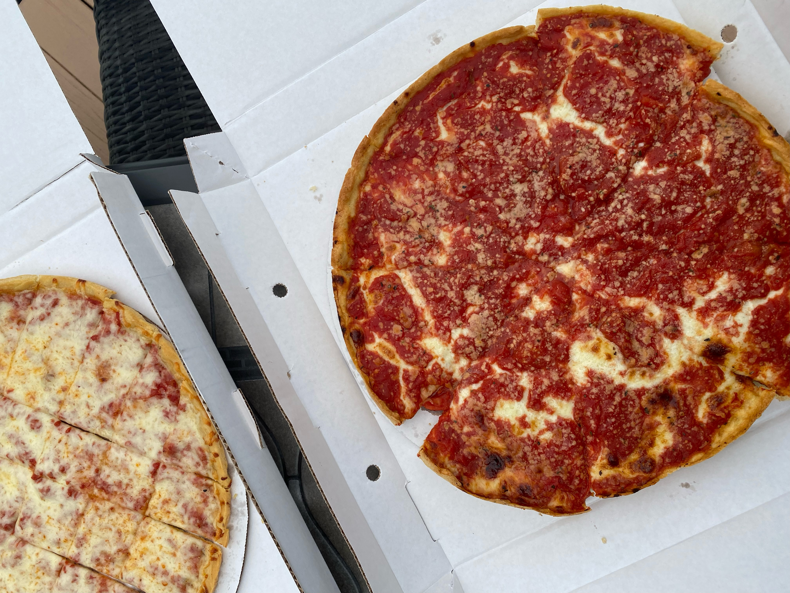 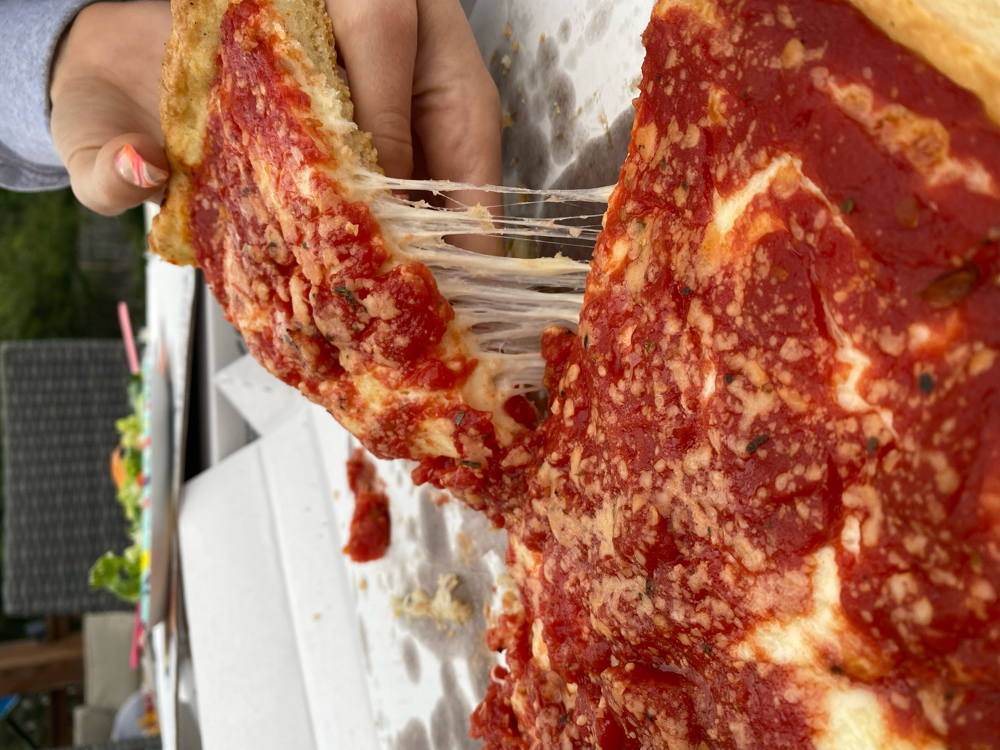Blufish, located in Glenview, Illinois, offers Japanese cousine with both an an a la carte menu and sushi menu. An upscale sushi restaurant, Blufish is one of my favorite restaurants for a nice dinner out or ordering in. Located at: 2709 Pfingsten Rd. Glenview, IL 60026.
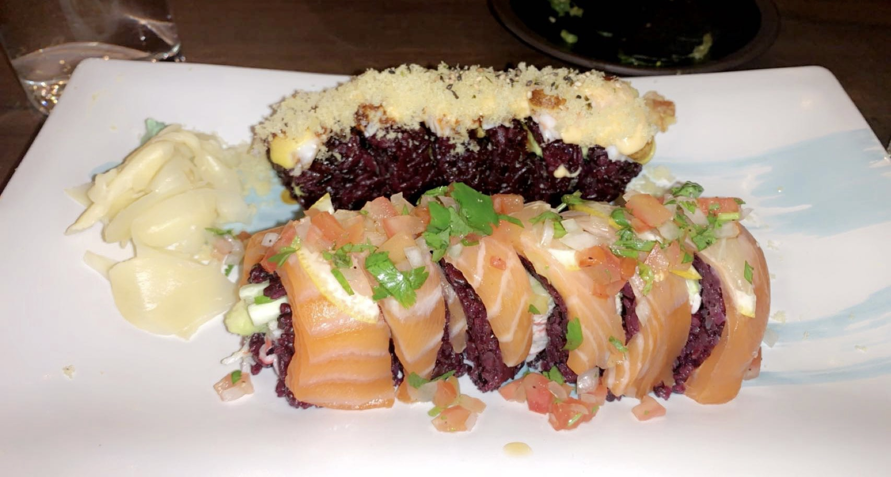 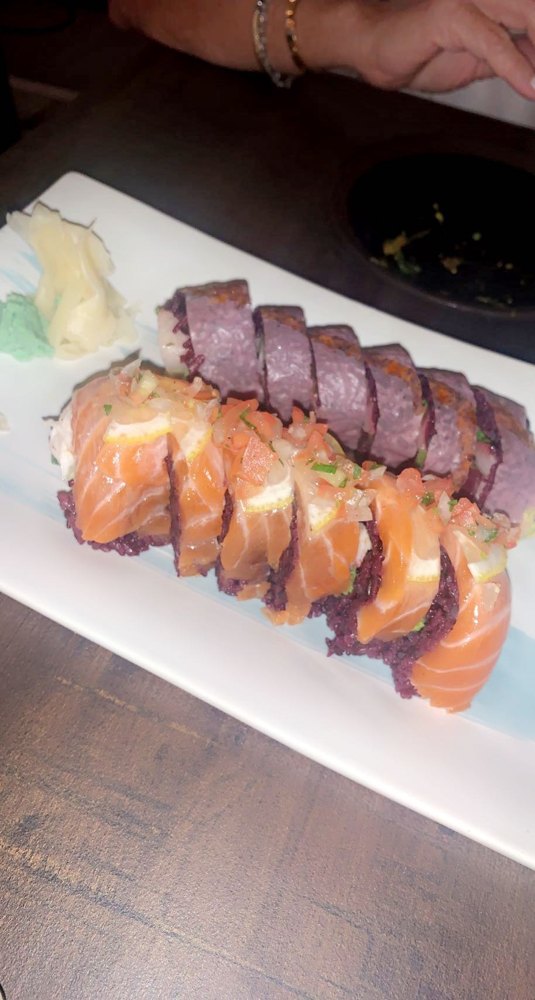 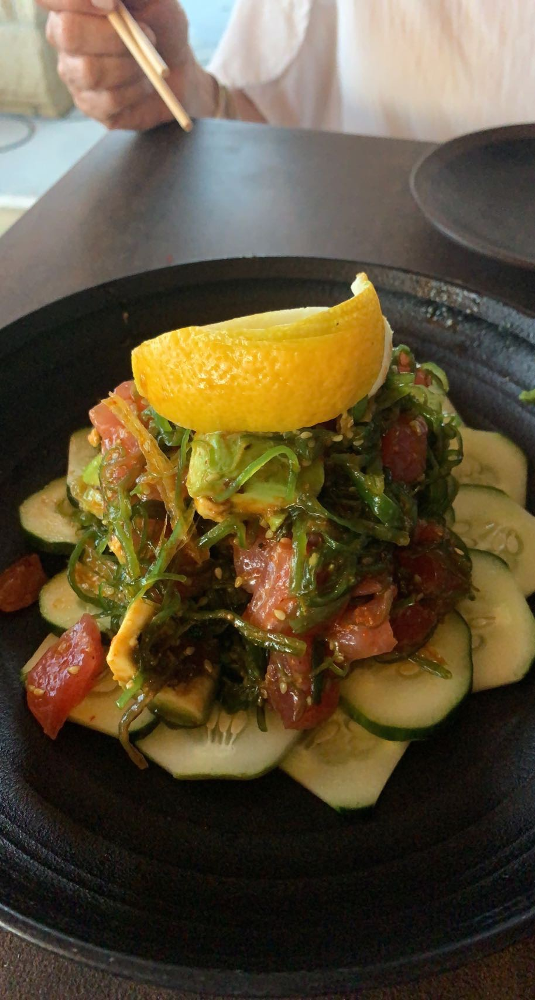 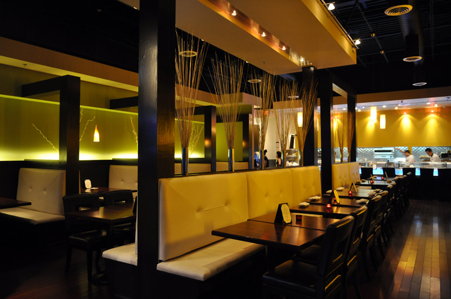 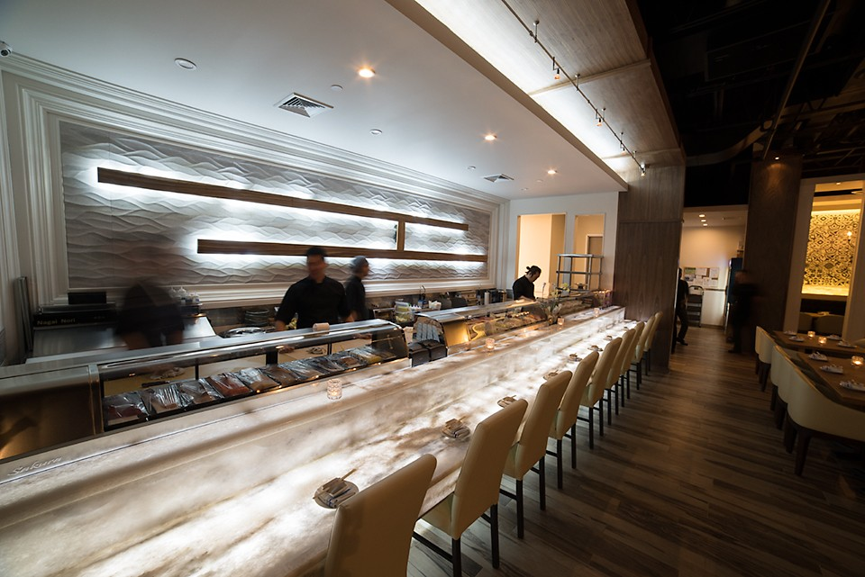
Guildhall is an American bistro that also offers a sushi menu, craft cocktails, and wine list. Open for lunch and dinner, and brunch on the weekends. Located at: 694 Vernon Ave. Glencoe, IL
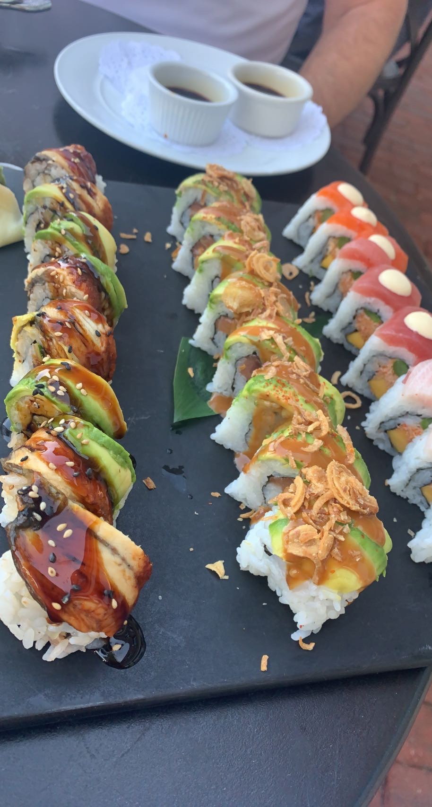 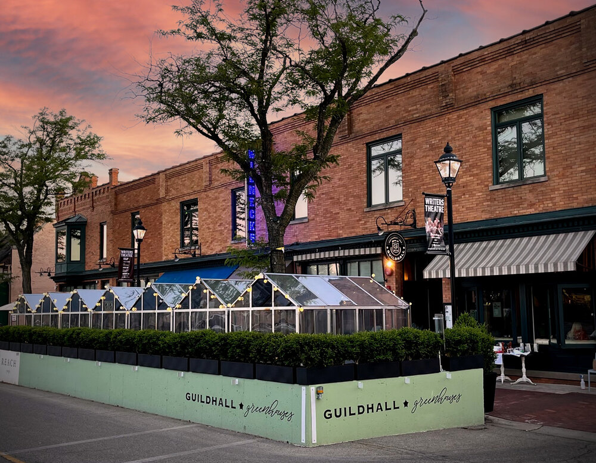 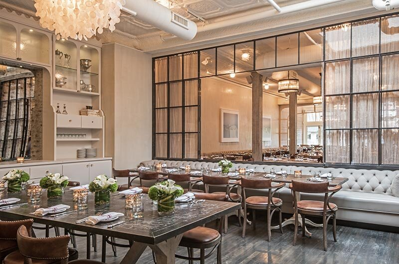Disotto
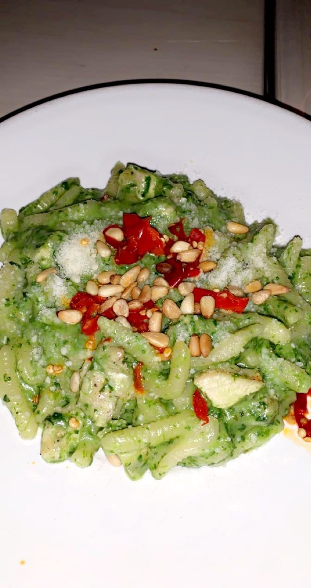LF Juice is a popular juice bar offering juices, smoothies, acai bowls, and other health foods. Located at: 647 Bank Ln Lake Forest, IL 60045. Lolo's Bowls, Acai Bowls
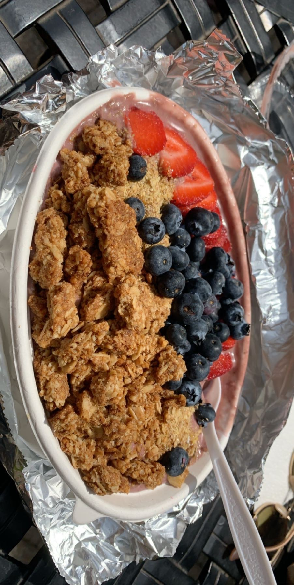 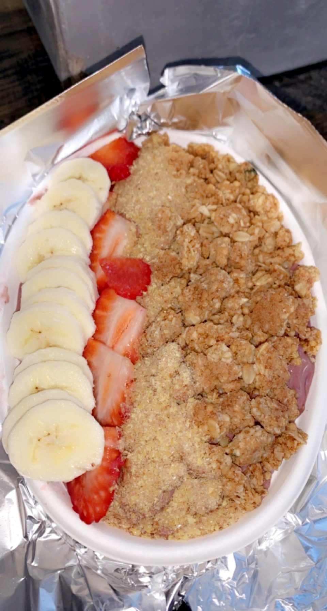 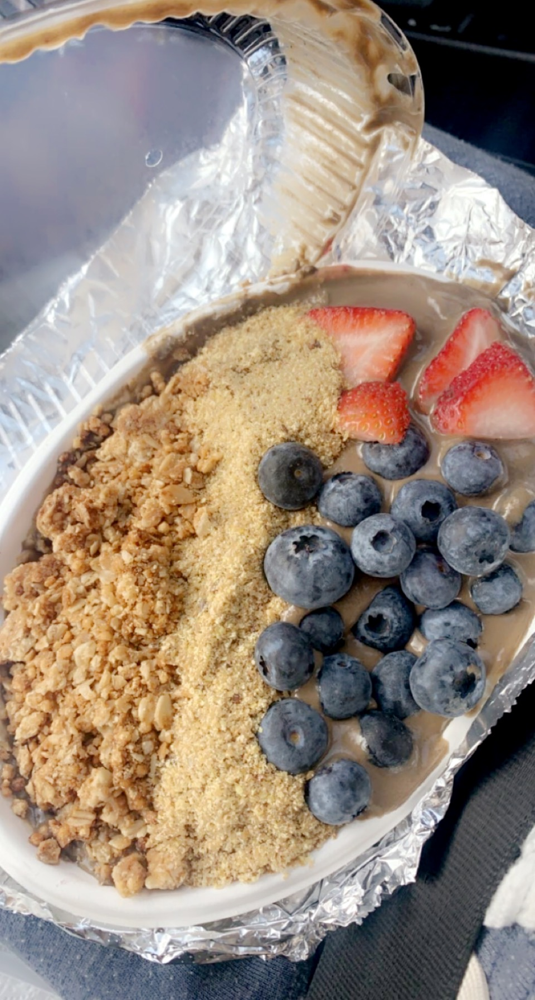


Spirit Elephant